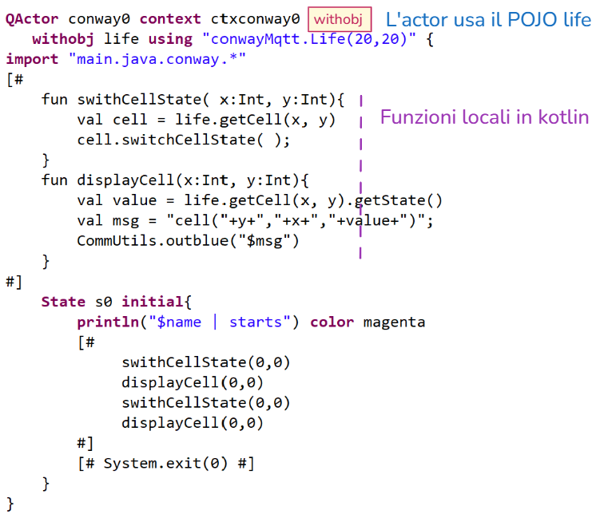

ConwayLifeUsingActors¶
conway25qak0¶
Questo progetto illustra come realizzare il gioco della vita di Conway usando attori Qak, attribuendo agli attori responsabilità via via crescenti.
|
LifeCore è un POJO che realizza il gioco della vita di Conway in Java avvalndosi delle classi Life e LifeController della libreria conway25JavaMqtt-1.0.jar, inserita nella directory applibs. |
Attore che ingloba sia Life sia LifeController (versione MQTT)
|
Attore che ‘ingloba’ solo Life (e non LifeController) distribuito nella libreria conway25JavaMqtt-1.0.jar 
|

{kind=link}
{kind=link}
conway2.qak: il controller come actor¶
La versione conway2.qak del sistema introduce un attore che ingloba Life distribuito nella libreria conway25JavaMqtt-1.0.jar, realizzando una versione a messaggi del LifeController.
L’attore funge da controller che reagisce a messaggi START/STOP/CLEAR usando il componente OutInMqttForActor per convertire i comandi ricevuti via MQTT dalla GUI in messaggi applicativi IApplMessage
Usa come supporto un POJO LifeUsageHelper che realizza funzioni di gestione di Life e il POJO di classe OutInMqttForActor per inviare alla GUI comandi di visualizzazione delle celle.
conway2.qak:LifeUsageHelper¶
Il POJO LifeUsageHelper ricevce nel costruttore un riferimento a Life e a OutInMqttForActor e definisce metodi
swithCellState(x,y) : per cambiare lo stato di una cella
fireEpoch() : per far evolvere il gioco di una Epoch
resetAndDisplayGrids() : per resettare il gioco e visualizzare le celle
displayGrids() : per visualizzare le celle
conway2.qak:OutInMqttForActor¶
Il POJO OutInMqttForActor riceve nel costruttore un riferimento all’attore che lo usa (gameControl)
si collega al broker MQTT
implementa IOutDev interface per inviare messaggi alla GUI via MQTT nei metodi display e displayCell
attiva un Thread per ricevere i messaggi emessi dalla GUI via MQTT
coneverte i messaggi ricevuti in messaggi applicativi IApplMessage
invia i messaggi applicativi all’attore gameControl
conway2.qak | Dichiarazioni iniziali I comandi ricevuti dalla GUI via MQTT sono convertiti nei Dispatch indicati da conway2.qak:OutInMqttForActor |
System conway25qak0
Dispatch startGame : startGame(ARG)
Dispatch stopGame : stopGame(ARG)
Dispatch clearGame : clearGame(ARG)
Dispatch exitGame : exitGame(ARG)
Context ctxconway0 ip [host="localhost" port=8920 ]
|
conway2.qak | Stato iniziale
|
QActor conway0 context ctxconway0
withobj life using "conwayMqtt.Life(20,20)" {
[#
/*1*/ val outdev =
main.java.conway.devices.OutInMqttForActor(myself)
/*2*/ val helper =
main.java.conway.LifeUsageHelper( life, outdev )
var running = false
#]
State s0 initial{
println("$name | starts") color magenta
/*3*/[#
helper.swithCellState(1,1)
helper.swithCellState(1,2)
helper.swithCellState(1,3)
#]
}
/*4*/Goto work
|
conway2.qak | Gestione dei messaggi
|
State work{}
/*1*/ Transition t0
whenMsg startGame -> handleStartGame
whenMsg stopGame -> handleStopGame
whenMsg clearGame -> handleClearGame
whenMsg exitGame -> handleExit
/*2*/ State handleStartGame{
println("$name | starts the game") color magenta
[#
/*3*/ val goon = helper.fireEpoch()
//goon false se empty o stable
#]
/*4*/if [# !goon #]{
autodispatch stopGame:stopGame(play)
}
}
Transition t0
/*5*/ whenTime 1000 -> handleStartGame
/*6*/ whenMsg stopGame -> handleStopGame
//non gestisco clear
State handleStopGame{
println("$name | stop the game") color magenta
[# running = false #]
}
Goto work
State handleClearGame{
println("$name | clear the game") color magenta
[# helper.resetAndDisplayGrids()
#]
}
Goto work
State handleExit{
println("$name | EXIT from the game") color magenta
[# System.exit(0) #]
}
|
conway2.qak: esecuzione¶
Attivare la GUI standalone (microservizio) usando docker:
docker-compose -f conwayguialone.yaml -p conwayguialone up
Costruire una immagine docker (con conway25Qak0 Dockerfile) per il sistema conway0 e attivarlo (usando il file conway0.yaml):
docker-compose -f conway0.yaml -p conway0 up
Verificare l’accensione delle celle iniziali
Usare la GUI per modificare lo stato delle celle e far evolvere il gioco
Oltre al Lifecontroller, anche ciascuna cella può essere realizzata come un attore: tratteremo questo caso in seguito (si veda ConwayLifeActorsQak).
Prima coneviene approfondire i meccansimi resi disponibili dal Linguaggio qak e il funzionamento degli ActorQak.
ms0¶
Struttura di un ActorQak che:
Descrive il mdodello qakms025.qak di un (micro)servizio di nome ms0 che risponde a richieste di identificatore req0
Il funzionamento è espresso nel Linguaggio qak, che consente “innesti” di codice Kotlin
Le richieste possono esssre inviate al servizio usando i seguenti protocolli:
TCP
CoAP
MQTT
Il servizio dichiara di usare un broker MQTT
Il servizio ha come topic di input la topic di nome
L’azione del servizio invia informazioni anche con MQTT usando la topic
Eliminando la dichiarazione del broker, l’operazione fallisce
L’azione del servizio invia informazioni usando CoAP.
Queste informazioni sono osservabili da un CoAP client
{kind=link}
ms0 callers¶
Interagisce con il servizio ms0 usando il protocollo TCP
|
|
Interagisce con il servizio ms0 usando il protocollo CoAP
|
|
Interagisce con il servizio ms0 usando il protocollo MQTT
|
conway2Mqtt.qak¶
conway2Mqtt.qak contiene una nuova versione del sistema che ha come controllore del gioco un ActorQak.
Nella versione iniziale, il supporto conway2.qak:OutInMqttForActor stabiliva una connessione MQTT con la GUI, per convertirne i comandi della GUI in Dispatch applicativi.
La nuova versione dichiara in modo esplicito, nel modello, la volonta di usare un broker MQTT:
La dichiarazione mqttBroker¶
Quesata nuova versione introduce una dichiarazione di , che implica quanto riportato in La specifica mqttBroker
System conway25qak0
mqttBroker "192.168.1.132" : 1883 eventTopic "conway0events"
Con questa specifica, ogni attore del contesto:
fa una subscribe alla
eventTopic conway0eventsfa una subscribe alla topic
unibo/qak/$nameove name è il nome dell’attore
In questa nuova versione:
non si usa più il supporto OutInMqttForActor per la conversione dei comandi della GUI in messaggi applicativi
si introduce un supporto OutDevForActor che usa la connessione MQTT stabilita a livello di sistema
i comandi della GUI vengono convertiti dalla QakInfrastructure in eventi che possono essere gestiti a livello applicativo nell’attore
l’attore gestisce gli evebti kernel_rawmsg avvalendosi del supporto GuiCmdTranslator che traduce i comandi della GUI in messaggi applicativi
conway2Mqtt.qak updateResource¶
Questa nuova versione utiliza anche la funzione updateResource connessa al fatto che ogni attore Qak è una risorsa CoAP.
State handleStopGame{
println("$name | stop the game") color magenta
updateResource [# "game stopped" #]
}
Goto work
conway2.qak: M2M¶
Con rifriemnto alla nuova versione del gioco conway2Mqtt.qak, introduciamo programmi Java che inviano comandi al gioco via TCP, CoAP e MQTT.
La GUI in questo caso è un puro dispositivo di visualizzazione e non invia comandi al gioco.
Invia messaggi di alto livello al servizio conway0 usando il protocollo TCP |
|
Invia messaggi di alto livello al servizio conway0 usando il protocollo CoAP |
|
Invia messaggi di alto livello al servizio conway0 usando il protocollo CoAP |
|
Invia messaggi di alto livello al servizio conway0 usando il protocollo CoAP |